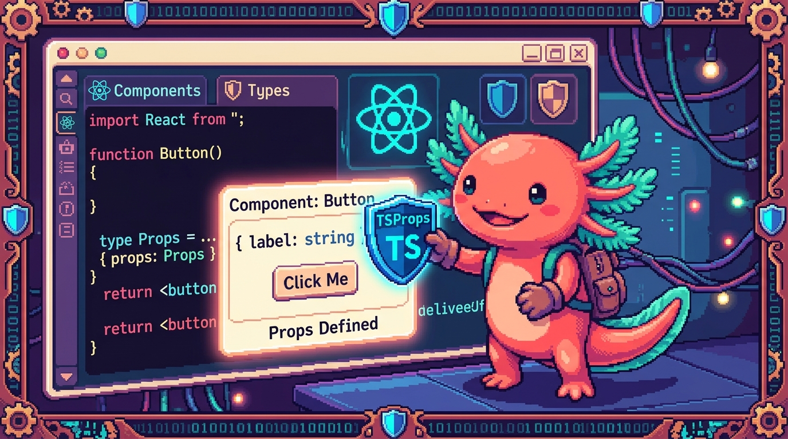

Capítulo 11 — TypeScript con React

Llevas diez capítulos tipando funciones, objetos y datos que llegan de afuera. Ahora viene el momento que estabas esperando sin saberlo: ¿cómo se juntan TypeScript y React? React es la librería con la que están construidas RachaSimple (la app de hábitos) y Faro (tu organizador de proyectos). Y resulta que React + TypeScript es una de las parejas más felices de la programación moderna: cada componente, cada prop, cada estado puede llevar su tipo, y el editor te avisa al instante si le pasas algo equivocado. Este capítulo es el puente al Módulo 06 (donde aprenderás React de verdad): aquí no vamos a enseñarte React entero, sino a leer y tipar los pedazos de React que ya viven en tus repos reales. Bit, tu ajolote, te recuerda algo que ya sabes: TypeScript es JavaScript con tipos. React con TS es el mismo React de siempre, solo que con etiquetas que dicen qué forma tiene cada cosa. Vamos.
1. ¿Qué es un componente y por qué tiparlo?
En React, la interfaz se arma con componentes: funciones que devuelven un pedazo de pantalla.
Mira el componente más pequeño de Faro, PhaseBadge (la etiqueta de color que muestra la fase de
un proyecto):
import { Badge } from "@/components/ui";
import { phaseConfig } from "@/lib/phases";
import type { ProjectPhase } from "@/lib/types";
export function PhaseBadge({ phase }: { phase: ProjectPhase }) {
const cfg = phaseConfig(phase);
return <Badge className={cfg.className}>{cfg.label}</Badge>;
}
Eso es todo: una función que recibe un dato (phase) y devuelve algo que se ve en pantalla
(<Badge>...</Badge>). Ese «algo que se ve» es JSX.
🟦 ¿Qué significa? — Componente
Un componente es una función de JavaScript que devuelve interfaz (un trozo de pantalla). Para qué sirve: dividir la app en piezas reutilizables, como ladrillos. Dónde se usa: en RachaSimple,
HabitCarddibuja una tarjeta de hábito; en Faro,PhaseBadgedibuja la etiqueta de fase. Cada pantalla es muchos componentes anidados.🟦 ¿Qué significa? — JSX / TSX
JSX es una sintaxis que deja escribir «HTML dentro de JavaScript» (como
<Badge>...</Badge>). Cuando ese archivo lleva tipos de TypeScript, la extensión es.tsxen vez de.ts. Para qué sirve: describir cómo se ve un componente sin separar el HTML del código. Dónde se ve: todos los archivos de pantalla en tus repos terminan en.tsx—HabitCard.tsx,project-card.tsx.💡 Tip
¿Por qué
{ phase }entre llaves? Es desestructuración (la viste en el Módulo 03). React le pasa al componente un solo objeto con todas sus props, y tú sacas las que necesitas por nombre.{ phase }significa «dame la propiedadphasede ese objeto».
2. Tipar las props con una interface
Las props son los datos que un componente recibe de quien lo usa, como los argumentos de una
función. Cuando son una o dos, puedes escribir el tipo en línea (como { phase }: { phase: ProjectPhase }).
Pero cuando son varias, lo limpio es declarar una interface (recuerda el Capítulo 03).
Mira MetricCard de RachaSimple, la tarjeta que muestra una métrica (por ejemplo «Racha actual: 7»):
import type { LucideIcon } from 'lucide-react';
import { SoftCard } from './SoftCard';
interface MetricCardProps {
label: string;
value: string | number;
caption?: string;
icon?: LucideIcon;
}
export function MetricCard({ label, value, caption, icon: Icon }: MetricCardProps) {
return (
<SoftCard className="space-y-2">
<div className="flex items-center justify-between">
<p className="text-xs ...">{label}</p>
{Icon && <Icon size={16} className="text-muted-foreground" />}
</div>
<p className="font-display text-4xl ...">{value}</p>
{caption && <p className="text-sm text-muted-foreground">{caption}</p>}
</SoftCard>
);
}
Lee la interface como una lista de requisitos: «quien use MetricCard tiene que darme un
label (texto) y un value (texto o número), y puede darme un caption y un icon».
🟦 ¿Qué significa? — Props
Props (de properties) son los datos de entrada de un componente. Quien usa el componente se los pasa como atributos:
<MetricCard label="Racha" value={7} />. Para qué sirven: que el mismo componente sirva para muchos casos cambiando solo los datos. Dónde se ve: en RachaSimple la pantalla de inicio usa variosMetricCardcon distintoslabelyvalue.🟦 ¿Qué significa? — Interface de props
Es una
interfaceque describe la forma exacta de las props que un componente acepta. Por convención se llamaNombreDelComponente+Props(MetricCardProps,PageHeaderProps). Para qué sirve: que TypeScript revise que le pasas las props correctas y que el editor te las autocomplete. Dónde se ve: en casi todos los componentes de RachaSimple y Faro.
Lo bonito: si por error escribes <MetricCard value={7} /> (olvidaste label), TypeScript te
subraya en rojo antes de abrir el navegador: «falta la propiedad label». Es el mismo poder
que ya conoces, ahora cuidando tu interfaz.
🔎 En tu código
Abre
RachaSimple/src/components/racha/MetricCard.tsx. Fíjate enicon?: LucideIcon.LucideIcones un tipo importado de la librería de íconoslucide-react: el componente exige que, si le pasas un ícono, sea uno de verdad de esa librería, no cualquier cosa.
3. Props opcionales y valores por defecto
¿Viste el ? en caption?: string y icon?: LucideIcon? Ese signo de pregunta lo aprendiste en
el Capítulo 03: marca una propiedad como opcional. Quien use MetricCard puede dárselas o no.
🟦 ¿Qué significa? — Prop opcional
Una prop opcional lleva
?después de su nombre en lainterface(caption?: string). Significa que se puede omitir; su valor seráundefinedsi no la pasan. Para qué sirve: componentes flexibles que no obligan a llenar todo. Dónde se ve: enMetricCard,captioneiconson opcionales;labelyvalueson obligatorias.
Cuando una prop es opcional, el componente debe protegerse por si llega undefined. Por eso
MetricCard escribe {caption && <p>...</p>}: «si hay caption, dibújalo; si no, nada». Es el
mismo estrechamiento del Capítulo 06.
A veces quieres que una prop opcional tenga un valor por defecto en lugar de quedar undefined.
Eso se hace al desestructurar, igual que con argumentos de función. Mira el Logo de Faro:
export function Logo({
showText = true,
size = 28,
}: {
showText?: boolean;
size?: number;
}) {
return (
<span className="inline-flex items-center gap-2">
<svg width={size} height={size} viewBox="0 0 48 48">{/* ...dibujo del faro... */}</svg>
{showText && <span className="font-display ...">Faro</span>}
</span>
);
}
showText = true significa: «si no me pasan showText, vale true». Así <Logo /> muestra el
texto, y <Logo showText={false} /> muestra solo el dibujo. Lo mismo con size = 28.
🟦 ¿Qué significa? — Valor por defecto
Un valor por defecto es el que toma una prop cuando no se la pasan, escrito con
=en la desestructuración (size = 28). Para qué sirve: que el componente funcione «de fábrica» sin obligar a configurarlo. Dónde se ve: en elLogode Faro,showTextysizevienen con valores listos.⚠️ Cuidado
El
?en lainterfacey el= valoren la desestructuración son dos cosas distintas pero complementarias. El?le dice a TS «esta prop se puede omitir». El= 28decide qué pasa cuando la omiten. Si pones valor por defecto, casi siempre marcas la prop opcional con?también, para que TS no la exija al usarla.💡 Tip
¿Notaste el truco
icon: IconenMetricCard? Eso renombra al desestructurar: la prop se llamaicon, pero dentro del componente la usamos comoIcon(con mayúscula). React exige que los componentes empiecen con mayúscula para distinguirlos de las etiquetas HTML normales.
4. Tipar children con ReactNode
Muchos componentes envuelven a otros. En <SoftCard>contenido</SoftCard>, ese «contenido» que va
entre la apertura y el cierre es una prop especial llamada children (hijos). ¿De qué tipo es?
De ReactNode.
Mira PageHeader de RachaSimple, que recibe un action (por ejemplo, un botón) para ponerlo a la
derecha del título:
import type { ReactNode } from 'react';
interface PageHeaderProps {
eyebrow?: string;
title: string;
description?: string;
action?: ReactNode;
}
export function PageHeader({ eyebrow, title, description, action }: PageHeaderProps) {
return (
<header className="mb-7 space-y-4">
{eyebrow && <p className="...">{eyebrow}</p>}
<div className="flex items-start justify-between gap-4">
<div className="space-y-2">
<h1 className="...">{title}</h1>
{description && <p className="...">{description}</p>}
</div>
{action}
</div>
</header>
);
}
action?: ReactNode significa: «opcionalmente recíbeme cualquier cosa que React pueda dibujar».
Un botón, un texto, un ícono, varios elementos juntos… todo eso es ReactNode.
🟦 ¿Qué significa? —
children
childrenes la prop automática que contiene lo que escribes entre la etiqueta de apertura y la de cierre de un componente: en<SoftCard>hola</SoftCard>,childrenes"hola". Para qué sirve: hacer componentes «contenedores» que envuelven a otros. Dónde se ve:SoftCardde RachaSimple envuelve el contenido de muchas tarjetas.🟦 ¿Qué significa? —
ReactNode
ReactNodees el tipo de «cualquier cosa que React puede mostrar en pantalla»: texto, números, un elemento JSX, una lista de elementos,null, etc. Se importa dereact. Para qué sirve: tiparchildreno cualquier prop que reciba contenido renderizable. Dónde se ve: enPageHeaderde RachaSimple la propactionesReactNode.
Cuando un componente recibe children directamente (no con otro nombre como action), su tipo
también es ReactNode. Una forma típica de tiparlo:
interface SeccionProps {
titulo: string;
children: ReactNode;
}
function Seccion({ titulo, children }: SeccionProps) {
return (
<section>
<h2>{titulo}</h2>
{children}
</section>
);
}
🔎 En tu código
En
SoftCard.tsxde RachaSimple no aparece la palabrachildrenen unainterfacepropia: el componente extiendeHTMLAttributes<HTMLDivElement>, un tipo de React que ya incluyechildreny todos los atributos de un<div>(comoclassNameystyle). Es un truco avanzado que verás a fondo en el Módulo 06; por ahora basta con saber quechildrensiempre es del tipoReactNode.
5. Tipar eventos: onClick, onChange
Los componentes responden a lo que hace el usuario: clics, teclas, texto que escribe. Eso son
eventos, y React los maneja con props que empiezan por on: onClick, onChange, onSubmit.
El caso más simple aparece en ColorPicker de RachaSimple (el selector de color de un hábito):
interface ColorPickerProps {
value: string | null;
onChange: (color: string | null) => void;
}
export function ColorPicker({ value, onChange }: ColorPickerProps) {
return (
<div className="flex flex-wrap gap-3">
<button type="button" onClick={() => onChange(null)} aria-label="Sin color">—</button>
{HABIT_COLORS.map((c) => (
<button key={c.id} type="button" onClick={() => onChange(c.id)} title={c.label} />
))}
</div>
);
}
Fíjate en dos cosas. Primero, onChange es una prop función: su tipo es
(color: string | null) => void (el => void lo viste en el Capítulo 04: «no devuelve nada útil»).
Segundo, onClick={() => onChange(c.id)} es lo que se ejecuta al hacer clic en ese botón.
🟦 ¿Qué significa? — Evento
Un evento es algo que ocurre en la interfaz: un clic, una tecla, un cambio de texto. Para qué sirve: reaccionar a lo que hace la persona. Dónde se ve: en
ColorPickercada botón tiene unonClickque avisa qué color se eligió.🟦 ¿Qué significa? — Manejador de evento (event handler)
Es la función que se ejecuta cuando ocurre un evento, como
() => onChange(c.id). Para qué sirve: decir «cuando pase esto, haz aquello». Dónde se ve: en todos losonClickyonChangede tus apps.
Cuando necesitas leer lo que el usuario escribió en un input, el manejador recibe un objeto
evento que también lleva tipo. Mira el input de hora en ReminderCard de RachaSimple:
<input
type="time"
value={time}
onChange={(e) => setTime(e.target.value)}
/>
Aquí e es el evento. e.target.value es el texto que el usuario tiene en el input. ¿De qué tipo
es e? En este caso React lo deduce solo, porque el <input> es un elemento HTML que React ya
conoce: e es del tipo ChangeEvent<HTMLInputElement>. No tienes que escribirlo.
🟦 ¿Qué significa? —
ChangeEvent
ChangeEvent<HTMLInputElement>es el tipo del evento que dispara un input al cambiar su valor. Lleva entre<>el tipo del elemento (un input, un textarea…). Para qué sirve: quee.target.valueesté tipado como texto y el editor sepa qué propiedades tienee. Dónde se usa: enReminderCardy en la pantalla de login de RachaSimple, al leer lo que se escribe.
A veces sí necesitas escribir el tipo del evento tú mismo: cuando defines el manejador aparte del JSX. Ahí React no puede deducirlo y se lo dices a mano:
import type { ChangeEvent } from 'react';
function manejarTexto(e: ChangeEvent<HTMLInputElement>) {
setNombre(e.target.value);
}
// ...y en el JSX:
<input value={nombre} onChange={manejarTexto} />
💡 Tip
Regla práctica: si escribes el manejador en línea (
onChange={(e) => ...}), normalmente React deduce el tipo deey no escribes nada. Si lo defines como función separada, tendrás que ponerle el tipo (ChangeEvent<...>,MouseEvent<...>, etc.). El editor te dirá cuál falta.
6. Tipar useState
Un componente recuerda cosas mientras está en pantalla: el texto a medio escribir, qué color se
eligió, si un menú está abierto. Eso es el estado, y se guarda con el hook useState.
🟦 ¿Qué significa? — Hook
Un hook es una función especial de React cuyo nombre empieza por
use(useState,useRef,useEffect). Da «superpoderes» a un componente: memoria, acceso al DOM, efectos. Para qué sirve: manejar estado y comportamiento. Dónde se ve: RachaSimple los usa en todas partes; los verás a fondo en el Módulo 06.🟦 ¿Qué significa? — Estado (state)
El estado es un dato que un componente guarda y que, al cambiar, hace que React vuelva a dibujar la pantalla. Para qué sirve: recordar y reaccionar (un contador, un campo de texto). Dónde se ve: en
ReminderCardel estado guarda la hora del recordatorio.
useState devuelve dos cosas en un array: el valor actual y una función para cambiarlo. Mira un
caso real de ReferralCard de RachaSimple:
const [count, setCount] = useState<number | null>(null);
Lee la línea así: «count es el valor (un número o null), setCount lo cambia, y empieza valiendo
null». El <number | null> entre ángulos es el tipo del estado, que ya conoces de los genéricos
(Capítulo 04): le dice a useState qué clase de dato va a guardar.
🟦 ¿Qué significa? —
useState
useState<T>(inicial)crea un estado del tipoTcon un valor inicial, y devuelve[valor, funciónParaCambiarlo]. Para qué sirve: guardar datos que cambian con el tiempo. Dónde se usa: enReferralCardguarda un contador (number | null) y enReminderCardguarda la hora escrita (string).
Más ejemplos reales de ReminderCard:
const [time, setTime] = useState<string>('');
const [permission, setPermission] = useState<ReminderPermission>('default');
time es texto y arranca vacío; permission es de un tipo propio (ReminderPermission, una unión
como las del Capítulo 06) y arranca en 'default'.
⚠️ Cuidado
Cuando das un valor inicial claro, TypeScript deduce el tipo solo y no necesitas el
<...>.useState(0)ya sabe que es un número;useState('')sabe que es texto. Pero si el estado puede ser de más de un tipo —comonumber | null, que empieza ennullpero luego será número— sí tienes que escribirlo:useState<number | null>(null). Si no, TS pensaría quecountsiempre esnully te impediría guardarle un número. Por esoReferralCardlo escribe explícito.💡 Tip
El nombre del cambiador es por convención
set+ el nombre del estado:count→setCount,time→setTime. No es obligatorio, pero todo el ecosistema lo hace y se lee solo.
Y así se conecta todo lo de este capítulo. En el login de RachaSimple, el estado y el evento bailan juntos:
const [email, setEmail] = useState<string>('');
// ...
<input value={email} onChange={(e) => setEmail(e.target.value)} />
El input muestra email; cuando escribes, el evento e trae el nuevo texto y setEmail lo guarda;
React redibuja. Estado tipado + evento tipado, trabajando en equipo.
7. Tipar useRef
A veces no quieres «memoria que redibuja la pantalla», sino una referencia a un elemento del DOM
real (para enfocar un input, medir su tamaño, hacer scroll). Eso es useRef.
🟦 ¿Qué significa? —
useRef
useRef<T>(inicial)crea una «caja» que guarda un valor entre redibujos sin provocar redibujos cuando cambia. Su uso más común es apuntar a un elemento del DOM. Para qué sirve: acceder directamente a un elemento (enfocarlo, leerlo). Dónde se usará: lo verás en formularios del Módulo 06; tus repos actuales casi no lo necesitan porque React maneja el DOM por ti.
Cuando apunta a un elemento del DOM, su tipo es el del elemento o null (porque al principio el
elemento todavía no existe):
import { useRef } from 'react';
function CampoNombre() {
const inputRef = useRef<HTMLInputElement>(null);
function enfocar() {
inputRef.current?.focus(); // current puede ser null al inicio
}
return (
<>
<input ref={inputRef} type="text" />
<button type="button" onClick={enfocar}>Enfocar</button>
</>
);
}
useRef<HTMLInputElement>(null) dice: «esta caja apuntará a un <input>, y por ahora es null».
El valor real se lee en inputRef.current. Como puede ser null, usamos ?. (el encadenamiento
opcional del Capítulo 06) antes de .focus().
🟦 ¿Qué significa? —
.currentToda ref guarda su valor en la propiedad
.current. Si la ref apunta a un input,inputRef.currentes ese input (onullsi aún no está montado). Para qué sirve: llegar al elemento real. Dónde se ve: en cualquieruseRef, siempre lees y escribes.current.⚠️ Cuidado
No confundas
useStateconuseRef. Cambiar el estado (setCount) redibuja la pantalla; cambiar una ref (inputRef.current = ...) no redibuja. Usa estado para datos que se ven; usa ref para «agarrar» un elemento o guardar algo entre bambalinas.
8. Juntándolo todo: leer un componente real
Ya tienes las piezas. Mira de nuevo ColorPicker con ojos nuevos y nómbralas tú:
interface ColorPickerProps { // 1. interface de props
value: string | null; // 2. prop obligatoria, unión de tipos
onChange: (color: string | null) => void; // 3. prop función para un evento
}
export function ColorPicker({ value, onChange }: ColorPickerProps) { // 4. desestructuración tipada
return (
<div className="flex flex-wrap gap-3">
<button type="button" onClick={() => onChange(null)}>—</button> {/* 5. manejador de evento */}
{HABIT_COLORS.map((c) => (
<button
key={c.id} // 6. key, obligatoria al recorrer listas
onClick={() => onChange(c.id)}
style={{ backgroundColor: c.hex }}
/>
))}
</div>
);
}
Esto es React + TypeScript de verdad, el mismo que escribirás en el Módulo 06. Nada mágico: una
función, props tipadas con interface, eventos manejados con funciones tipadas. TypeScript es
JavaScript con tipos, y React con TypeScript es React con etiquetas. Bit te aplaude con sus
branquias: ya puedes leer la interfaz de tus apps, y eso es el 80% del camino para escribirla.
🔎 En tu código
Abre tres archivos seguidos:
RachaSimple/src/components/racha/MetricCard.tsx,PageHeader.tsxyColorPicker.tsx. En cada uno, busca primero lainterface ...Props, luego la función, luego el JSX. Si reconoces ese patrón —interface, función, JSX— ya sabes leer cualquier componente de tus repos.
✅ Checklist — ¿ya domino esto?
- [ ] Sé que un componente es una función que devuelve JSX, y que los archivos con tipos terminan en
.tsx. - [ ] Puedo declarar una interface de props (
NombreProps) y desestructurarla en el componente. - [ ] Distingo una prop obligatoria de una opcional (la opcional lleva
?). - [ ] Sé poner un valor por defecto a una prop opcional al desestructurar (
size = 28). - [ ] Entiendo qué es
childreny que su tipo esReactNode. - [ ] Sé tipar un evento: en línea React lo deduce; aparte uso
ChangeEvent<HTMLInputElement>. - [ ] Puedo escribir
useState<T>(inicial)y sé cuándo necesito el<T>y cuándo TS lo deduce. - [ ] Distingo
useState(redibuja) deuseRef(no redibuja), y sé leer.current. - [ ] Puedo abrir un componente real de RachaSimple o Faro y nombrar sus partes.
🧪 Ejercicios
-
Lee y etiqueta (sin computadora). Copia en papel la
interface MetricCardPropsde RachaSimple. Marca cuáles props son obligatorias y cuáles opcionales, y di de qué tipo es cada una. Explica por quévalueesstring | numbery no solonumber. -
Diseña la interface (sin computadora). Imagina un componente
HabitCardque muestra un hábito. Debe recibir: el nombre del hábito (texto, obligatorio), la racha actual (número, obligatorio), un emoji (texto, opcional) y una funciónonCompleteque no recibe nada y no devuelve nada. Escribe lainterface HabitCardPropscompleta. -
💻 Tipa el estado. En un archivo
.tsx, crea un componenteContadorconconst [n, setN] = useState(0)y un botón cuyoonClickhagasetN(n + 1). Luego añade un segundo estadoconst [nota, setNota] = useState<string | null>(null). Pregúntate: ¿por qué el primero no necesita<...>y el segundo sí? -
💻 Input controlado. Crea un componente con
const [texto, setTexto] = useState('')y un<input value={texto} onChange={(e) => setTexto(e.target.value)} />. Muestra debajo<p>{texto}</p>. Comprueba que al escribir, el párrafo se actualiza. Pasa el ratón sobreeen tu editor: ¿qué tipo muestra? -
💻 Props opcionales con defecto. Copia el componente
Logode Faro a un archivo nuevo. Úsalo tres veces:<Logo />,<Logo showText={false} />y<Logo size={48} />. Observa qué cambia en cada caso y por qué el valor por defecto evita errores. -
💻 Caza el error. Escribe
<MetricCard value={7} />(olvidandolabel) y mira el subrayado rojo que pone TypeScript. Lee el mensaje. Luego escribe<MetricCard label="Racha" value={true} />y observa el nuevo error: ¿por quétrueno es válido comovalue? Conecta esto con lo que el editor te avisa antes de abrir el navegador.